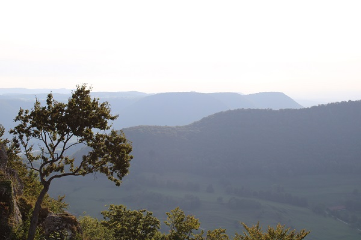
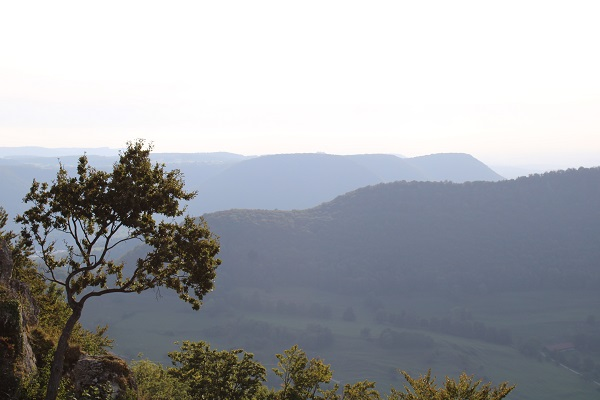

Lieblingsorte nah & fern
Unsere kleine Hütte ...
... mitten auf der Schwäbischen Alb. Erbaut wurde sie im Jahr 1935 von meinem Uropa und seinen engsten Freunden und ist bis heute etwas ganz besonderes. Umgeben von Wald, Wiesen und Weiden kann man da oben völlig die Ruhe genießen. Auch der Mittagsfels, von dem man eine wunderschöne Aussicht hat und von dort man bis zur Burg Teck blicken kann, lädt vor allem bei Sonnenschein zum Verweilen ein (s.Bild rechts). Auch ein Spaziergang zum Breitenstein, welcher direkt am Albtrauf liegt, ist auf jeden Fall lohnenswert (s.Bild mittig).
 

Fuerteventura - Eine Reise in den Süden
Seit 2001 haben wir der kanarischen Insel jährlich ein Besüchle abgestattet, daher steckt diese auch voller schöner Erinnerungen. Wer Badeurlaube bevorzugt und weitläufige Sandstrände liebt, ist hier genau richtig. Allerdings muss man den starken Wind und die karge Landschaft mögen. Hin und wieder begegnet man eventuell mal einem wilden Esel, einer Ziege oder dem ein oder anderen frechen Streifenhörnchen.
An diesen Orten sollte man auf jeden Fall mal vorbeischauen:
- Playa de Cofete
- Corralejo
- Playa de Sotavento
- Oasis Park
- La Pared
- Morro Jable
- Costa Calma
- Jandìa
- Ajuy
- ... und viele mehr


Konzert Sommer 2019
Abriss nach der letzten Abi-Prüfung mit Cro & Majan am Mercedes-Benz-Museum
Zurück nach oben